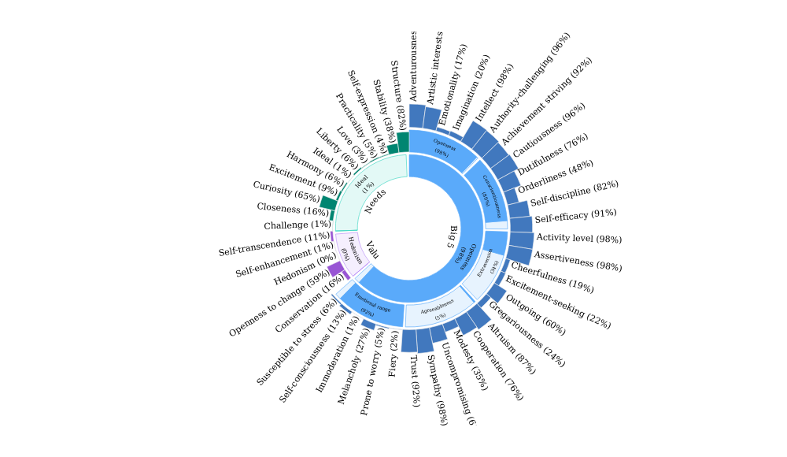

The goal of {ibmsunburst} is to wrap the JavaScript library that IBM have produced for making sunburst personality insights charts for use in R and R Markdown documents.
Work on this package was part-sponsored by Hendrik Feddersen, a prominent HR Analytics advocate.
Installations
Install {ibmsunburst} from GitHub
# install.packages("remotes")
remotes::install_gitub("jumpingrivers/imbsunburst")Example
Below we input the path to a JSON file corresponding to the output of IBM Watson Personality Insights service and visualize it.
json_path <- system.file(
"extdata", "profiles",
"en_v2.json", package = "ibmsunburst"
)
ibmsunburst::ibmsunburst(json = json_path, version = "v2")
You can use the function on a list, on JSON or on a filepath, making it quite handy for integration in your workflow.
There is no R wrapper for the IBM Personality Insight API itself yet, but you could use it with {httr}, as shown in a very short example in the vignette.
Contributing
Wanna report a bug or suggest a feature? Great stuff! For more information on how to contribute check out our contributing guide.
Please note that this R package is released with a Contributor Code of Conduct. By participating in this package project you agree to abide by its terms.
Dev notes
Kent Russell added some documentation of the changes that he made to the source sunburst-chart JavaScript library. Find them here.